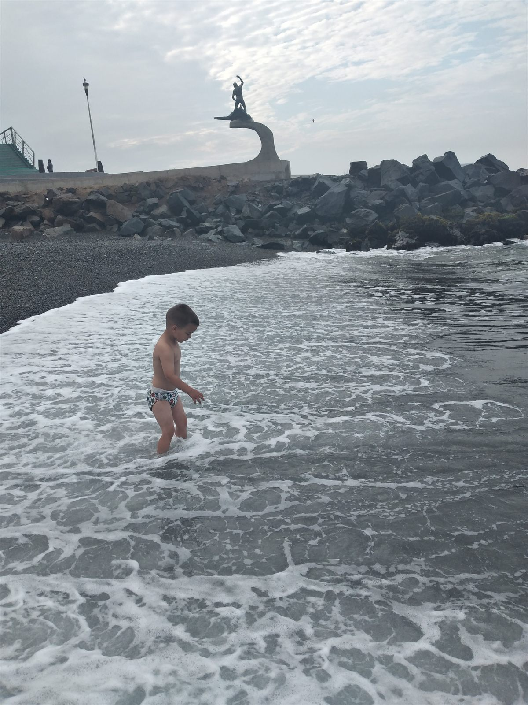

Who Will Care for My Autistic Child When I Die?
A practical guide to legal authority, housing, financial protection, public benefits, care records, emergency planning, and building a support system that does not depend on one person.
Read the full article